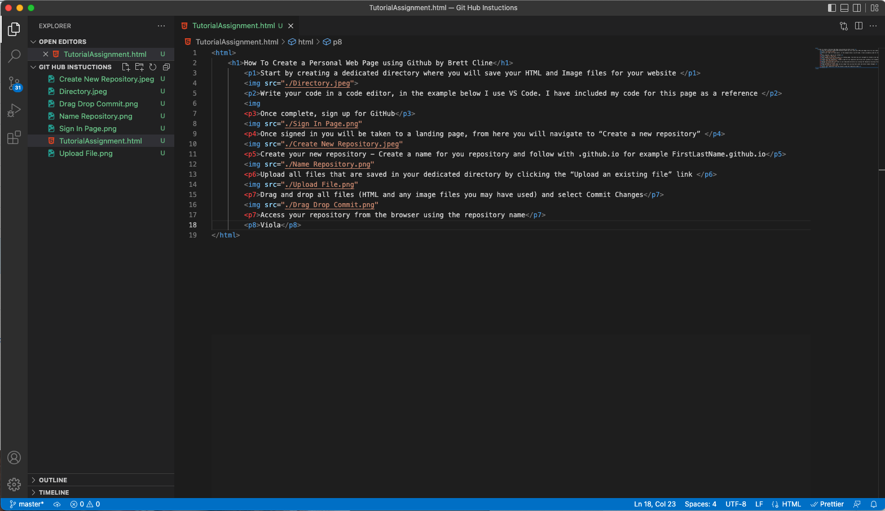
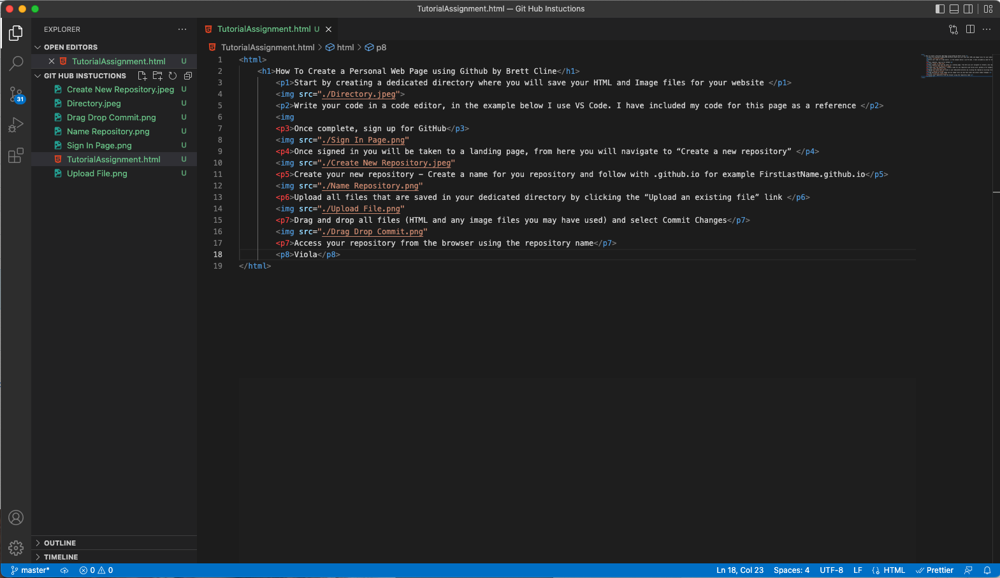

How To Create a Personal Web Page using Github by Brett Cline
Start by creating a dedicated directory where you will save your HTML and Image files for your website
 Write your code in a code editor, in the example below I use VS Code. I have included my code for this page as a reference
Once complete, sign up for GitHub
Write your code in a code editor, in the example below I use VS Code. I have included my code for this page as a reference
Once complete, sign up for GitHub
 Once signed in you will be taken to a landing page, from here you will navigate to “Create a new repository”
Once signed in you will be taken to a landing page, from here you will navigate to “Create a new repository”
 Create your new repository - Create a name for you repository and follow with .github.io for example FirstLastName.github.io
Create your new repository - Create a name for you repository and follow with .github.io for example FirstLastName.github.io
 Upload all files that are saved in your dedicated directory by clicking the “Upload an existing file” link
Upload all files that are saved in your dedicated directory by clicking the “Upload an existing file” link
 Drag and drop all files (HTML and any image files you may have used) and select Commit Changes
Drag and drop all files (HTML and any image files you may have used) and select Commit Changes
 Access your repository from the browser using the repository name
Viola
Access your repository from the browser using the repository name
Viola